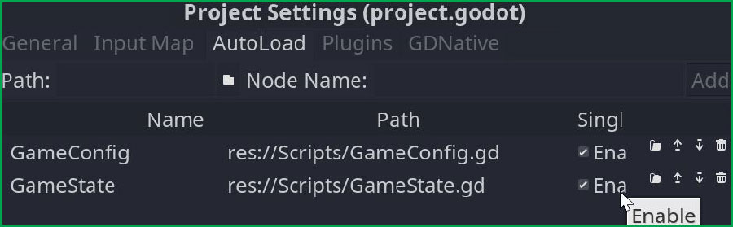
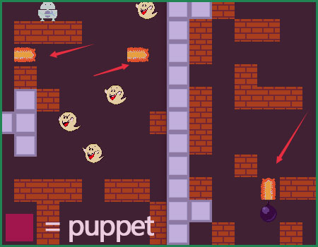

Godot游戏开发实践之一：使用High Level Multiplayer API制作多人游戏（下）
一、前言 继续接着上篇： Godot游戏开发实践之一：使用High Level Multiplayer API制作多人游戏（上） ，本篇主要讲解游戏 Demo 的代码分析与开发总结。
主要内容： 局域网多人游戏开发代码简析与开发小结http://liuqingwen.me/blog/2020/07/23/godot-game-devLog-1-making-game-with-high-level-multiplayer-api-part-2/ http://liuqingwen.me/blog/introduction-of-godot-series/
二、正文 示例源码我已经上传到 Github ，另外可以在这里体验游戏： https://gotm.io/spkingr/bomberman ，创建服务器后可以邀请好友一起开启炸弹之旅。
部分游戏代码分析 首先，最重要的核心部分是处理游戏中局域网连接的代码，这是一个单例 Singleton 也叫 AutoLoad ，代码不需要使用在节点上，相当于一个一直存在的单例脚本，我创建了一个名为 GameState.gd 的脚本，然后在项目设置里添加、启用即可：

一、 GameState 代码
我们来看代码：
GameState.gd 1 2 3 4 5 6 7 8 9 10 11 12 13 14 15 16 17 18 19 20 21 22 23 24 25 26 27 28 29 30 31 32 33 34 35 36 37 38 39 extends Node signal player_list_update(players, colors) signal player_color_update(id, color) signal player_ready_status_update(id, isReady) signal player_disconnected(id) signal connection_succeeded() signal game_ended(why) signal game_ready(isReady) signal game_loaded() const PORT := 34567 const MAX_PLAYERS := 4 const GAME_SCENE := 'res://World/Game.tscn' const COLORS := [Color('#B0BEC5' ), Color('#8D6E63' ), Color('#FFAB91' ), ...] var myId := -1 var myName := '' var myColor := Color.white var otherPlayerNames := {} var otherPlayerColors := {} var isGameStarted := false master var readyPlayers := [] master var availableColors := [] func _ready() -> void: self.get_tree().connect('network_peer_connected' , self, '_onNewPlayerConnected' ) self.get_tree().connect('network_peer_disconnected' , self, '_onPlayerDisconnected' ) self.get_tree().connect('server_disconnected' , self, '_onServerDisconnected' ) self.get_tree().connect('connected_to_server' , self, '_onConnectionSuccess' ) self.get_tree().connect('connection_failed' , self, '_onConnectionFail' )
有几个注意点，代码是通用的，所以客户端的代码也是一样的，每个人不仅仅要记录自己的信息，还要记录其他玩家的相关信息，这就是 otherPlayerNames/otherPlayerColors 属性的必要性了。另外 _ready() 方法中的 5 个 Godot 自带的信号都是处理网络连接相关的，可以参考官方文档的介绍： 管理连接 Managing connections ，我们分布来看这些信号触发的调用地点和作用：
GameState.gd 1 2 3 4 5 6 7 8 9 10 11 12 13 14 15 16 17 18 19 20 21 22 23 24 25 26 27 28 29 30 31 32 33 34 35 36 37 38 39 40 41 42 43 44 45 46 47 48 49 50 51 52 53 54 55 56 57 58 59 60 61 62 63 64 65 func _onNewPlayerConnected(id : int) -> void: if isGameStarted: return self.rpc_id(id, '_addMyNameToList' , myName, myColor) if self.get_tree().is_network_server(): self.emit_signal('game_ready' , false) var color := _getRandomColor() self.rpc('_updateColor' , id, color) func _onPlayerDisconnected(id : int) -> void: if isGameStarted: self.emit_signal('player_disconnected' , id) else : _removeDisconnectedPlayer(id) func _onConnectionSuccess() -> void: self.emit_signal('connection_succeeded' ) func _onServerDisconnected() -> void: self.emit_signal('game_ended' , 'Server disconnected.' ) func _onConnectionFail() -> void: self.emit_signal('game_ended' , 'Connection failed.' ) remote func _addMyNameToList(playerName : String, playerColor : Color) -> void: var id = self.get_tree().get_rpc_sender_id() otherPlayerNames[id] = playerName if ! otherPlayerColors.has(id): otherPlayerColors[id] = playerColor self.emit_signal('player_list_update' , otherPlayerNames, otherPlayerColors) remotesync func _updateColor(id : int, color : Color) -> void: if id == myId: myColor = color else : otherPlayerColors[id] = color self.emit_signal('player_color_update' , id, color)
这里比较重要的是 network_peer_connected 信号连接后的发放 _addMyNameToList 方法的运行。注意：虽然此方法也将自身颜色发送到其他玩家场景代码中，但是这里颜色很可能还没有被服务器赋值，是默认颜色，所以我们依然需要再定义一个更新颜色的信号，以保证每个玩家收到其他玩家的颜色是正常的。
在连接之前我们需要创建服务器或者连接到服务器：
GameState.gd 1 2 3 4 5 6 7 8 9 10 11 12 13 14 15 16 17 18 19 20 21 22 23 24 25 26 27 28 29 30 31 32 33 34 35 36 37 38 39 40 41 42 43 44 45 46 func hostGame(playerName: String) -> bool: myName = playerName otherPlayerNames.clear() otherPlayerColors.clear() availableColors = COLORS.duplicate() readyPlayers.clear() var host := NetworkedMultiplayerENet.new() var error := host.create_server(PORT, MAX_PLAYERS) if error != OK: return false self.get_tree().network_peer = host self.get_tree().refuse_new_network_connections = false myId = self.get_tree().get_network_unique_id() myColor = _getRandomColor() return true func joinGame(address: String, playerName: String) -> bool: myName = playerName otherPlayerNames.clear() otherPlayerColors.clear() readyPlayers.clear() var host := NetworkedMultiplayerENet.new() var error := host.create_client(address, PORT) if error != OK: return false self.get_tree().network_peer = host myId = self.get_tree().get_network_unique_id() return true func resetNetwork() -> void: isGameStarted = false otherPlayerNames.clear() otherPlayerColors.clear() yield (self.get_tree(), 'idle_frame' ) self.get_tree().network_peer = null
这部分代码非常简单，官网有介绍，接下来是准备开始游戏部分，这一部分可以用“一波三折”表示：
GameState.gd 1 2 3 4 5 6 7 8 9 10 11 12 13 14 15 16 17 18 19 20 21 22 23 24 25 26 27 28 29 30 31 32 33 34 35 36 37 38 39 40 41 42 43 44 45 46 47 48 49 50 51 52 53 54 55 56 57 58 59 60 func readyGame(isReady : bool) -> void: self.rpc('_readyGame' , isReady) remote func _readyGame(isReady : bool) -> void: var id := self.get_tree().get_rpc_sender_id() self.emit_signal('player_ready_status_update' , id, isReady) if self.get_tree().is_network_server(): if isReady: assert (! id in readyPlayers, 'Player %s is already in ready players!' % id) readyPlayers.append(id) self.emit_signal('game_ready' , readyPlayers.size() == otherPlayerNames.size()) else : readyPlayers.erase(id) self.emit_signal('game_ready' , false) func startGame() -> void: self.get_tree().refuse_new_network_connections = true readyPlayers.clear() self.rpc('_prestartGame' ) remotesync func _prestartGame() -> void: isGameStarted = true var game : Node2D = load(GAME_SCENE).instance() game.name = 'Game' game.set_network_master(1 ) self.get_parent().add_child(game) self.get_tree().paused = true if self.get_tree().is_network_server(): _postStartGame(myId) else : self.rpc_id(1 , '_postStartGame' , myId) remote func _postStartGame(id : int) -> void: readyPlayers.append(id) if readyPlayers.size() == otherPlayerNames.size() + 1 : self.rpc('_startGame' ) remotesync func _startGame() -> void: readyPlayers.clear() self.emit_signal('game_loaded' )
关键代码搞定，如果大家有疑问可以多参考一下代码注释。
二、 Game.gd 主游戏场景代码
游戏主场景中处理关于玩家信息、死亡、消息、敌人生成等，但是这些都比较简单，我相信有兴趣的朋友可以去看看，并且能看懂，关键部分在于添加玩家代码：
Player.gd 1 2 3 4 5 6 7 8 9 10 11 12 13 14 15 16 17 18 19 20 21 22 23 24 25 26 27 28 29 30 31 32 33 34 35 36 37 38 39 40 41 42 43 44 45 46 47 48 49 50 51 52 53 func _ready() -> void: if GameConfig.isSoundOn: _audioPlayer.play() _resultPopup.showPopup('Waiting for other players...' , 'Waiting' , true, _resultPopup.BUTTON_BACK_BIT + _resultPopup.BUTTON_STAY_BIT) GameState.connect('game_loaded' , self, '_onGameLoaded' ) GameState.connect('game_ended' , self, '_onGameEnded' ) GameState.connect('player_disconnected' , self, '_onPlayerQuit' ) _setDifficulties() _addPlayers() GameConfig.sendMessage(GameConfig.MessageType.System, GameState.myId, 'enters the game!' ) GameConfig.rpc('sendMessage' , GameConfig.MessageType.System, GameState.myId, 'enters the game!' ) func _addPlayers() -> void: var positions := [GameState.myId] + GameState.otherPlayerNames.keys() positions.sort() var player := PlayerNode.instance() player.connect('lay_bomb' , self, '_on_Player_lay_bomb' ) player.connect('dead' , self, '_on_Player_dead' ) player.connect('damaged' , self, '_on_Player_damaged' ) player.connect('collect_item' , self, '_on_Player_collect_item' ) player.name = str(GameState.myId) player.playerId = GameState.myId player.playerName = GameState.myName player.playerColor = GameState.myColor player.global_position = _playerPositionNodes[positions.find(GameState.myId)].position player.set_network_master(GameState.myId) _playersContainer.add_child(player) _allPlayers.append(GameState.myId) for id in GameState.otherPlayerNames: player = PlayerNode.instance() player.name = str(id) player.playerId = id player.playerName = str(GameState.otherPlayerNames[id]) player.playerColor = GameState.otherPlayerColors[id] player.global_position = _playerPositionNodes[positions.find(id)].position player.set_network_master(id) _playersContainer.add_child(player) _allPlayers.append(id) for node in _playerPositionNodes: node.queue_free()
可以看到这里 player.set_network_master(id) 每个玩家都设置了相对应的 Master ID ，并且名字也是他们的 ID 转化的字符串，由 ID 表示任何场景中该玩家是否为 Master 还是 Puppet 。
注意，当前场景中只有 Master 身份的玩家才有信号处理功能 ，其他 Puppet 玩家节点只是“木偶”而已，不需要处理事件，“主人会全权处理”。
三、 Player.gd 玩家代码
相信到这里很多东西大家都能拨云见日了，玩家中的代码也不复杂，摘几个点稍微说下就可以了：
Player.gd 1 2 3 4 5 6 7 8 9 10 11 12 13 14 15 16 17 18 19 20 21 22 23 24 25 26 27 28 29 30 31 32 33 34 35 36 37 38 39 40 41 func _unhandled_input(event: InputEvent) -> void: if event.is_action_pressed('show_name' ): _labelName.show() elif event.is_action_released('show_name' ): _labelName.hide() if ! self.is_network_master(): return if _isStuning || _isDead: return if event.is_action_pressed('lay_bomb' ): _layBomb() func _physics_process(delta): if ! self.is_network_master(): return if _isStuning || _isDead: return self.move_and_slide(_velocity) self.rpc_unreliable('_updatePosition' , self.position) master func bomb(byKiller : int, damage : int) -> void: damage(damage, Vector2.ZERO, byKiller) master func damage(amount : float, direction : Vector2 = Vector2.ZERO, byId : int = -1) -> void: master func collect(itemIndex : int) -> void:
基本上， _process 或者 _physics_process 等持续运行的方法尽量保证只有主人节点运行，然后由主人节点更新奴隶节点必要的属性即可，比如：朝向、当前动画、位置等。因为这些会因机器性能而异，如果各自为政，那么很可能会导致不同步，这也是很多人会在网上问：如何在服务器端和客户端保持碰撞同步？非常频繁的问题。
其他一些场景，我会在最后总结说明，我相信大家开发过程中肯定会有收获总结，调试过程你就会很清楚，哪些方法需要远程调用，哪些只能在主人节点或者服务器端运行了。
四、 其他示例代码
首先是怪物代码 Enemy.gd ，这个方法 _process 完全是为 puppet 服务的，我直接在这个方法中更新了怪物的几乎所有信息：位置、图形、动画。
Enemy.gd 1 2 3 4 5 6 7 8 `func _process(delta: float) -> void: if self.get_tree().network_peer == null || ! self.is_network_master(): return if _isDead || _isPaused: return self.rpc_unreliable('_puppetSet' , self.position, _sprite.flip_h, _animationPlayer.current_animation)
如何踢人实际很简单，只有服务器可以，让服务发送消息让被踢的 id 退出游戏即可：
LobbyUI.gd 1 2 3 4 5 6 func _onPlayerBeKickedOut(id : int) -> void: self.rpc_id(id, '_kickedOut' ) remote func _kickedOut() -> void: self.get_tree().network_peer = null
其他的包括炸弹爆炸、发送消息、显示结果、掉落物品等处理我相信大家都有自己的实现方式，这里就不啰嗦了，也可以参考我的源代码吧。
游戏开发小结 开发过程中，我填了不少坑，我再谈谈：
1. 名字必须相同
在开发过程中，在电脑上测试时，我发现偶尔会遇到炸弹、爆炸效果在客户端或者“奴隶”端不会消失，就像这样的 Bug ：

这个在电脑上还好，到了网络端就非常频繁地触发这种 BUG 了。我刚开始自以为是不同步造成方法调用失败，但是回头想想方法一定会调用，只要连接在一起，所以不是这个原因，后面看到这个错误消息我就恍然大悟：
E 0:00:11.206 _process_get_node: Failed to get cached path from RPC: Game/Enemies/Enemy123456.
说明一个问题： Master 和 Puppet 名字对不上！所以解决方案很简单，对于生成的物品，统一唯一 的名字即可，比如生成的物品、炸弹、怪物等，举例游戏中生成的怪物：
1 2 3 4 5 6 7 8 9 10 11 12 13 14 15 16 17 18 func _spawnEnemy() -> void: _enemyNameIndex += 1 var pos := _tileMap.map_to_world(tile) + _tileMap.cell_size / 2 var name := 'Enemy' + str(_enemyNameIndex) self.rpc('_addEnemy' , pos, name) remotesync func _addEnemy(pos : Vector2, name : String) -> void: var enemy = enemyScene.instance() enemy.name = name enemy.set_network_master(1 ) enemy.global_position = pos _enemiesContainer.add_child(enemy)
2. 不要传递复杂数据
这个问题也困惑了我一会，在主场景生成一个物品，然后将这个物品信息发送到其他 puppet 场景，结果其他场景得到的是空数据！会不会是因为传递了复杂数据类型？我改了一下：
1 2 3 4 5 6 7 8 9 10 11 12 13 14 self.rpc('_addItem' , GameState.myId, item) remotesync func _addItem(id : int, item : GameConfig.ItemData) -> void: var power : Node = load(item.data).instance() power.set_network_master(id) self.add_child(power) self.rpc('_addItem' , GameState.myId, item.data) remotesync func _addItem(id : int, data : String) -> void: var power : Node = load(data).instance() power.set_network_master(id) self.add_child(power)
可以看到，之前传递的是 ItemData 类型复杂数据，后面我改成 String 同样可以实现相同的功能，避免了这个问题。
3. 确保处于连接状态
有个小问题，虽然不会影响游戏运行，但是我觉得还是有必要解决：
E 0:00:01.821 get_network_unique_id: No network peer is assigned. Unable to get unique network ID.
主要原因是网络断开，但是依然调用了这句代码： self.is_network_master() ，不过这个错误不影响游戏，我还是改了一下：
1 2 3 4 func _physics_process(delta: float) -> void: if self.get_tree().network_peer == null || ! self.get_tree().is_network_server(): return
4. 确保必要数据同步
我们知道服务端和客户端共享一套代码，那么有些数据可以由服务器发送，但是有些复杂稳定的数据没必要占用网络，比如地图资源，那么我们在初始化的时候就可以共享：
1 2 3 4 5 6 func _ready() -> void: _navigation = self.get_parent() for tile in self.get_used_cells(): if self.get_cellv(tile) == GameConfig.GRASS_TILE_ID: _brokenTiles.append(tile)
这样避免发送数据，或者避免出现问题。
5. 其他小问题
即使对方设置了 get_tree().refuse_new_network_connections = false 客户端还是能加入，但是看不到任何 id 信息。无伤大雅吧。
我觉得这是 Godot 的一个 BUG 。
游戏开发资源 推荐一个平台， Gotm.io 支持 Godot 游戏，而且局域网多人游戏可以在这个平台上创建房间，实现基本的网络多人游戏，还是蛮好的。
这个平台免费，可以给你做一些数据统计，比如人数、收入等，当然，你必须得英文比较好，毕竟上面的人几乎都是国外的开发者或者国外的玩家。
广告时间：
三、总结 小结一下。。。。。
puppet 大部分场合等同于 remote ，因为你的调用都是在 master 中调用
几乎全部的事件————都应该确定只运行于 master 中，比如某个物品 3 秒后 queue_free ，万一卡住了，超过 3 秒没回收？所以这个方法可以在 server/master 中调用保证同步
所有添加物品几乎都是 rpc ，同理删除物品也是 rpc ，比如 queue_free ，比如地图的更改
master/puppet 相比 remote 的一个用法是： master A 触发了或者调用了 puppet B 的方法，这时候可以使用 master/puppet 关键字更好
方法的调用分三类：
_ready _process _input 等系统调用，注意 is_network_master
事件，使用编辑器连接起来的事件，注意 is_network_master
公开方法和属性，这些方法或者属性注意使用 master/puppet
本篇的 Demo 以及相关代码已经上传到 Github ，地址： https://github.com/spkingr/Godot-Demos ， 后续继续更新，原创不易 ，希望大家喜欢！ :smile:
我的博客地址： http://liuqingwen.me ，我的博客即将同步至腾讯云+社区，邀请大家一同入驻： https://cloud.tencent.com/developer/support-plan?invite_code=3sg12o13bvwgc ，欢迎关注我的微信公众号：
Comments: